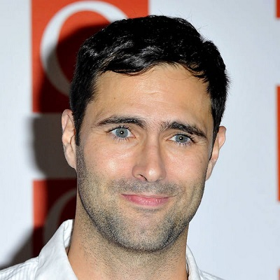

Carlos Sebastian Esqueda Ortiz
Acerca de mi...
Egresado de la Escuela Politecnica de Gualadajara de la carrera de Técnologo Profesional en Sistemas Informática y actualmente cursó la carrera de Ingeneria en Informática en CUCEI, cuento con 21 años de edad y una gran pasión por el mundo de la técnologia desde muy temprana edad, en donde siempre quise dedicarme a algo referente a ello, pero nunca imagine que terminaría programando y trabajando en diversos proyectos muy interesantes desde aplicaciones similares a puntos de ventana hasta un videojuego en Unity, mi yo de pequeño quedaría fascinado si lo comentará hasta donde hemos llegado, soy un gran fan de la música en donde me encanta mucho el rock britanico, mis bandas favoritas son: Coldplay, Keane, Travis, Oasis y The Beatles, además de ser un aprendiz amateur del piano.
Mis conocimientos
- Programación con C++
- Programación con C#
- Programación con Java
- Programación con Python
- Pentester Jr.
- Edición de video
- Edición de fotografía
- Conocimientos en HTML
- Conocimientos en CSS
Mis fortalezas
- Perseverante
- Responsable
- Trabajador
- Honesto
- Perfeccionista
Proyectos
| Nombre: | Lenguaje(s): | Descripción: |
|---|---|---|
| Mascota Virtual | C++ | Programa de escritorio que simulaba una mascota que el usuario debia cuidar. |
| Parking | Java | Programa de escritorio que administraba los lugares de un estacionamiento. |
| Adventure of A Lifetime | C# | Videojuego hecho en Unity de una aventurera en busca del tesoro. |
| Tarifario de Paqueteria | Java | Programa escritorio de cobros de tarifa en una paqueteria a un cliente. |
Personas que admiró
Chris Martin
Consultar biografía en Wikipedia
Tim Rice-Oxley
Consultar biografía en Wikipedia
Yiruma
Consultar biografía en Wikipedia